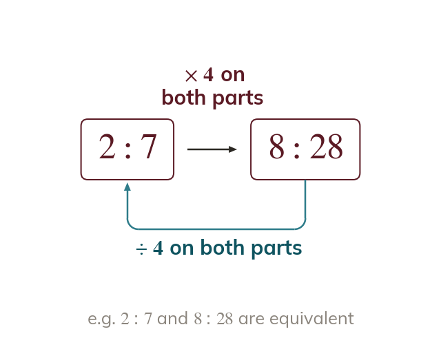

Ratio and equivalence
A ratio a:b records how two quantities are linked. Multiply or divide BOTH parts by the same number for an equivalent ratio.
Any two quantities can be linked multiplicatively - not just familiar pairs like and but any pair such as and
A ratio a:b records this relationship. Multiplying or dividing BOTH parts by the same number gives an equivalent ratio - the relationship between the parts hasn't changed, only how it's written.
A ratio a:b records this relationship. Multiplying or dividing BOTH parts by the same number gives an equivalent ratio - the relationship between the parts hasn't changed, only how it's written.